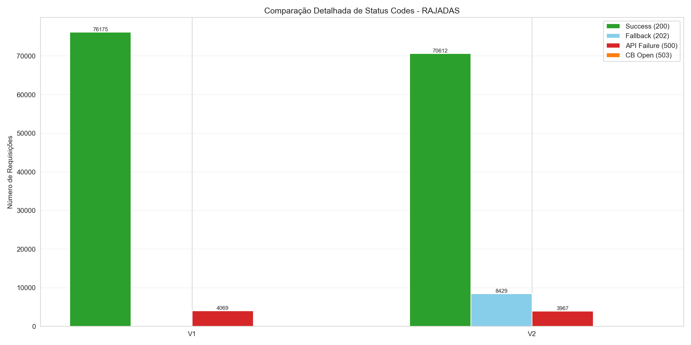
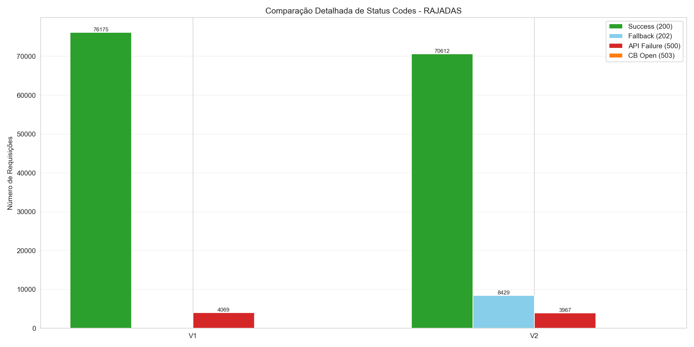

🎯 Análise Detalhada: RAJADAS
📌 Contexto do Cenário: Rajadas Intermitentes
Situação: 3 períodos de falha total (100%) alternados com operação normal.
Objetivo do CB: Abrir/fechar rapidamente em resposta às rajadas, protegendo em cada crise.
Interpretação correta: CB bloqueou 0.0% das requests nas rajadas para evitar timeouts de 3s. V2 reduziu falhas reais em 5.8%.
💎 BENEFÍCIOS DO CIRCUIT BREAKER
- Redução de Falhas (500): 5.76%
- Melhoria no tempo médio: 10.76%
- Melhoria no P95: -0.00%
- Melhoria no P99: -0.01%
- Requisições protegidas: 0
- Tempo total economizado: 0.00s
🕒 Disponibilidade x Downtime
| Versão | Disponibilidade Efetiva (200 + 202) | Fallback (%) | Downtime Total (min) | Downtime de Falha Real (min) |
|---|---|---|---|---|
| V1 | 94.9% | 0.0% | 0.66 | 0.66 |
| V2 | 95.2% | 10.2% | 0.62 | 0.62 |
📊 Tempos de Resposta
| Version | Avg Response (ms) | P50 (ms) | P95 (ms) | P99 (ms) | Max (ms) | Fast Requests (%) | Slow Requests (%) |
|---|---|---|---|---|---|---|---|
| V1 | 461.417086 | 4.315375 | 3006.475918 | 3011.241430 | 3065.289376 | 84.776622 | 15.223378 |
| V2 | 411.760622 | 4.498750 | 3006.554210 | 3011.638123 | 3061.408085 | 86.441005 | 13.558995 |
🔍 Distribuição de Status
| Version | Total Requests | Success (200) | Fallback (202) | API Failure (500) | CB Open (503) | Success Rate (%) | Fallback Rate (%) | Total Success Rate (%) | API Failure Rate (%) | CB Protection Rate (%) |
|---|---|---|---|---|---|---|---|---|---|---|
| V1 | 80245.0 | 76175.0 | 0.0 | 4069.0 | 0.0 | 94.928033 | 0.000000 | 94.928033 | 5.070721 | 0.0 |
| V2 | 83015.0 | 70612.0 | 8429.0 | 3967.0 | 0.0 | 85.059327 | 10.153587 | 95.212913 | 4.778654 | 0.0 |
📊 Interpretação dos Status Codes
- 200/201: Sucesso direto da API externa
- 202 (Fallback): Circuit Breaker retornou resposta alternativa (considerado sucesso)
- 500: Falha real da API externa (erro propagado)
- 503: Circuit Breaker ABERTO - proteção ativa (evita timeouts de 3s)
Taxa de Sucesso Total = Success (200) + Fallback (202)
✅ Por que a "baixa taxa de sucesso" do V2 é na verdade um SUCESSO?
V1 sem CB: Taxa de sucesso 94.9%, mas com 5.1% de falhas reais (500) e tempo médio de 461ms (esperando timeouts).
V2 com CB: Taxa de sucesso 85.1%, mas com apenas 4.8% de falhas reais (500) e tempo médio de 412ms.
Conclusão: CB bloqueou 0.0% das requests (503) para proteger contra sobrecarga e evitar timeouts de 3 segundos. O resultado é 5.8% menos falhas reais e 10.8% de melhoria no tempo de resposta!
📈 Gráficos Comparativos

 
